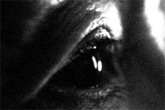

Sounding Glass

Sylvia Schedelbauer – Germany 2011 – 10 min.
R: Sylvia Schedelbauer – V: Light Cone
HD – No Dialogues
A man in a forest is subject to a flood of impressions; structurally rhythmic waves of images and sounds give form to his introspection. – Light Cone
Tuesday 14/10 10:30 p.m. Werkstattkino
Sylvia Schedelbauer, born in Tokyo. She first moved to Berlin in 1993, where she has been based since. She studied at the University of Arts Berlin. Her films negotiate the space between broader historical narratives and personal, psychological realms mainly through poetic manipulations of found and archival footage.
Films (selection): Memories 2004 – False Friends 2007 – Way Fare 2009 – Sounding Glass 2011